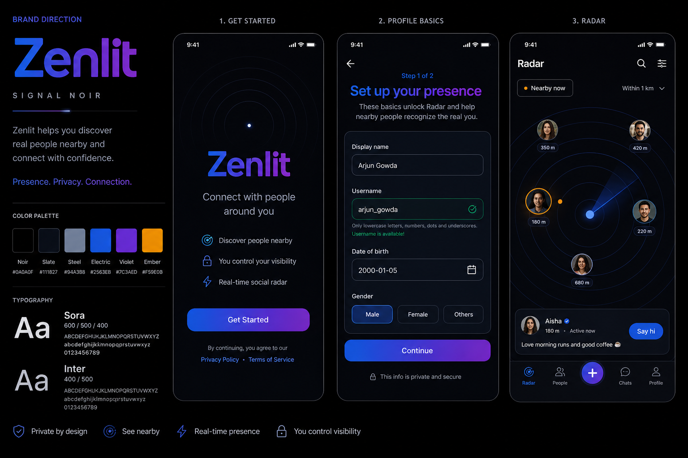
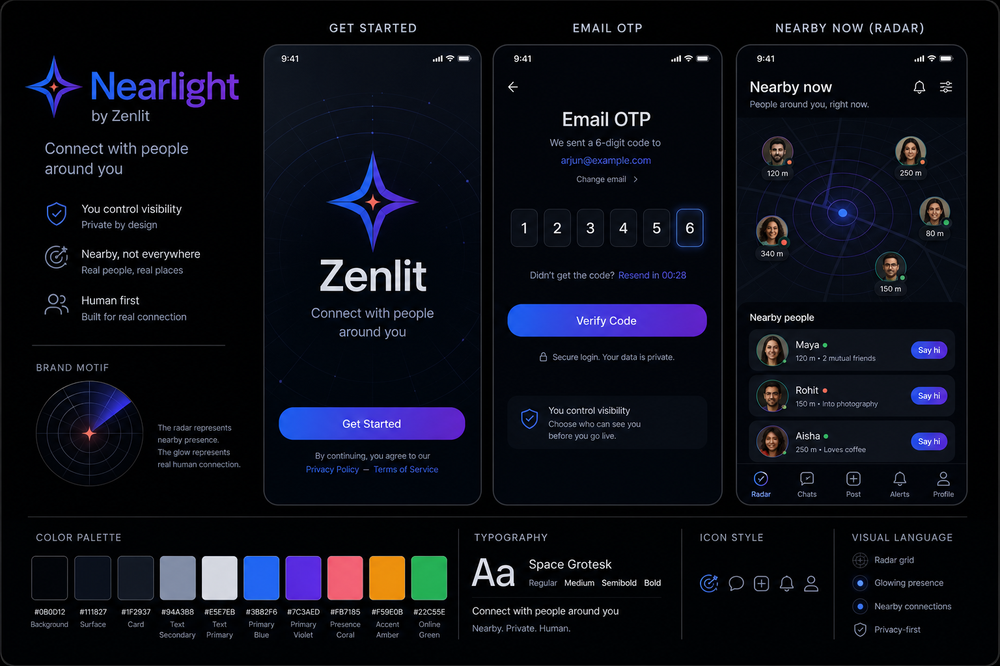

Problem
The app currently looks generic because colors, typography, cards, headers, and buttons are defined differently screen by screen.
Branding and UI consistency report
My recommendation is not a full rebrand. Keep the current black, electric blue, and violet foundation, then make it ownable with one brand token system, a restrained presence accent, sharper typography, and a reusable radar/signal visual language.
The app currently looks generic because colors, typography, cards, headers, and buttons are defined differently screen by screen.
Centralize brand tokens and migrate the first-run product path before touching every page.
Use the Signal Noir direction: current Zenlit DNA, stronger radar/presence motif, and a tiny amber accent for “nearby now”.
Closest to the current app. Stronger radar, privacy, and presence language without changing the product into something unfamiliar.

More premium and precise. Adds icy cyan highlights and a sharper component system, but may feel colder.

Warmer and more human. Good for social trust, but it drifts farther from the current blue-violet identity.

The main code-level branding fix should be one source of truth. Material Design describes design tokens as named style values for things like colors, fonts, and measurements. That is exactly what Zenlit needs before more screens are built.
Sora gives the brand a more ownable shape than default system fonts. Use it for Zenlit, onboarding titles, and high-emotion moments like “Set up your presence.”
Inter remains the practical UI font for inputs, forms, helper text, and repeated operational screens.